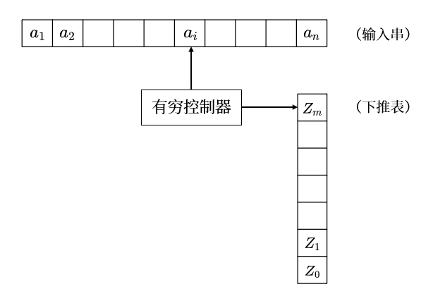

4 上下文无关文法¶
4.1 下推自动机¶
-
下推自动机（\(\text{PDA}\)）是一个七元组 \(M = (Q, \Sigma, \Gamma, \delta, q_0, Z_0, F)\)，其中
- \(Q\) 是有穷状态机
- \(\Sigma\) 是有穷的输入字母表
- \(\Gamma\) 是有穷的栈符号表
- \(\delta: Q \times (\Sigma \cup \{\varepsilon\}) \times \Gamma \to (Q \times \Gamma)^*\) 是转移函数
- \(q_0 \in Q\) 是初始状态
- \(Z_0\) 是栈底符号
- \(F \subseteq Q\) 是终结状态集

- 转移函数的一般形式为 \(\delta(q, a, Z) = \{(p_1, \gamma_1), (p_2, \gamma_2), \cdots, (p_m, \gamma_m)\}\)，其中 \(q \in Q, a \in \Sigma \cup \{\varepsilon\}, Z \in \Gamma, p_i \in Q\) 且有 \(\gamma_i \in \Gamma^* \ (i = 1, 2, \cdots, m, m \geqslant 0)\)，表示当下推自动机的当前状态为 \(q\)，读头读到输入符号为 \(a\) 且栈顶符号为 \(Z\) 时
- 转移函数执行后状态变为 \(p_i\)
- 栈顶符号由 \(Z\) 变为 \(\gamma_i\)
- 当 \(a \in \Sigma\) 时，读头越过输入符号 \(a\)；当 \(a = \varepsilon\) 时，读头保持不动
- 格局（\(\text{ID}\)）：下推自动机的一个格局是一个三元组 \((q, w, r)\)，其中 \(q\) 为下推自动机的当前状态，\(w\) 为尚未读入的输入符号串，\(\gamma\) 为当前在栈中的符号串
- 当下推自动机执行一次 \(\delta\) 动作后，由一个格局 \(\text{ID}_i\) 转换到下一个格局 \(\text{ID}_{i+1}\)，记作 \(\text{ID}_i \vdash_M \text{ID}_{i+1}\)，在不引发歧义的情况下，\(M\) 可以省略
-
用 \(\vdash_M^*\) 表示任意多次转换，由归纳法定义
- 对任何格局 \(I\)，都有 \(I \vdash_M^* I\)
- 如果存在某个格局 \(K\)，使得 \(I \vdash_M^* K\) 与 \(K \vdash_M^* J\)，则 \(I \vdash_M^* J\)
即存在格局序列 \(K_1, K_2, \cdots, K_n\) 使得 \(I = K_1, J = K_n\)，且对于任意 \(1 \leqslant i < n\) 都有 \(K_i \vdash_M^* K_{i+1}\)，则有 \(I \vdash_M^* J\)
-
下推自动机接受的语言
-
接收方式
-
设 \(M = (Q, \Sigma, \Gamma, \delta, q_0, Z_0, F)\) 是一个下推自动机，集合
\[ L(M) = \left\{w \mid (q_0, w, Z_0) \vdash^* (p, \varepsilon, \gamma), w \in \Sigma^*, p \in F, \gamma \in \Gamma^*\right\} \]称为 \(M\) 按终结状态方式接受的语言
-
设 \(M = (Q, \Sigma, \Gamma, \delta, q_0, Z_0, F)\) 是一个下推自动机，集合
\[ N(M) = \left\{w \mid (q_0, w, Z_0) \vdash^* (p, \varepsilon, \varepsilon), w \in \Sigma^*, p \in Q\right\} \]称为 \(M\) 按空栈方式接受的语言
-
-
等价性
- 对于某个按终结状态方式接受语言的下推自动机 \(M_1\)，存在一个按空栈方式接受语言的下推自动机 \(M_2\) 使得 \(N(M_2) = L(M_1)\)
- 对于某个按空栈方式接受语言的下推自动机 \(M_1\)，存在一个按终结状态方式接受语言的下推自动机 \(M_2\) 使得 \(L(M_2) = N(M_1)\)
-
-
确定的下推自动机：一个下推自动机 \(M = (Q, \Sigma, \Gamma, \delta, q_0, Z_0, F)\) 若有
- 对于每个 \(q \in Q, a \in \Sigma \cup \{\varepsilon\}, A \in \Gamma\)，\(\delta(q, a, A)\) 至多包含一个元素
- 对于每个 \(a \in \Sigma\)，若 \(\delta(q, a, A)\) 非空，则 \(\delta(q, \varepsilon, A)\) 为空\
则称 \(M\) 为确定的下推自动机（\(\text{DPDA}\)），其接受的语言称为确定的上下文无关语言（\(\text{DCFL}\)）
- 确定的下推自动机的标准形式
- 每个确定的上下文无关语言都可由下述确定的下推自动机所接受：在 \(M\) 中，一切 \(\delta(q, a, X) = (p, \gamma)\) 都有 \(|\gamma| \leqslant 2\)
- 每个确定的上下文无关语言 \(L\) 都能被下述确定的下推自动机 \(M = (Q, \Sigma, \Gamma, \delta, q_0, Z_0, F)\) 所接受：对每个 \(\delta(q, a, X) = (p, \gamma)\)，\(\gamma\) 只能有三种形式：\(\gamma = \varepsilon, \gamma = X\) 或 \(\gamma = YX \ (X, Y \in \Gamma)\)
- 设 \(M\) 是一个确定的下推自动机，则存在等价的确定的下推自动机 \(M'\) 能扫描完整个输入串
4.2 上下文无关语言¶
- 下推自动机与上下文无关文法的等价性
- 设 \(L\) 是一个上下文无关文法，则存在一个下推自动机 \(M\) 使得 \(N(M) = L\)
- 给定一个下推自动机 \(N\)，则 \(N(M)\) 是上下文无关文法
-
语法分析树：上下文无关文法 \(G = (V, T, P, S)\) 满足下列要求的一棵树称为关于 \(G\) 的语法分析树
- 树的每个节点带有一个 \(V \cup T \cup \{\varepsilon\}\) 的符号标记：根结点的标记是 \(S\)，树的非叶结点只能以 \(V\) 中符号作为标记
- 如果结点 \(n\) 带有标记 \(A\)，结点 \(n_1, n_2, \cdots, n_k\) 是结点 \(n\) 从左到右的子结点并分别带有标记 \(X_1, X_2, \cdots, X_k\)，则 \(A \to X_1 X_2 \cdots X_k\) 必须是 \(P\) 中的一个产生式
- 如果结点带有标记 \(\varepsilon\)，则该结点是其父结点唯一的叶结点
对于一棵语法分析树，将其叶结点上的标记从左到右收集起来组成的字符串称为该语法分析树的边缘
- 设 \(G = (V, T, P, S)\) 是一个上下文无关文法，则 \(S \overset{*}{\Rightarrow} \alpha \ (\alpha \in V \cup T)\) 当且仅当在 \(G\) 中存在一棵以 \(\alpha\) 为边缘的语法分析树
- 二义性：对于某个上下文无关语言，若有某个字符串 \(w \in L(G)\)，存在两棵不同的语法分析树都以 \(w\) 为边缘，则称该文法是有二义性的
- 如果某些上下文无关语言，无论用什么上下文无关文法去产生，该文法都是有二义性的，则称这种语言为固有二义性的上下文无关语言
- 对于上下文无关文法 \(G\)，如果从开始符号 \(S\) 推高过程的每一步都只能替换句型中最左边的变元，则称此推导过程为最左推导；如果从开始符号 \(S\) 推高过程的每一步都只能替换句型中最右边的变元，则称此推导过程为最右推导
-
上下文无关文法的化简
- 设 \(G = (V, T, P, S)\) 是一个上下文无关文法
- 无用符号：定义两类符号 \(X\) 为无用符号：
- \(X \in V \cup T\)，但 \(X\) 不出现在任何由 \(S\) 推导出的字符串中
- \(X \in V\)，但 \(X\) 不能推导出任何终结符串
- 可为空：对于 \(A \in V\)，若有 \(A \overset{*}{\Rightarrow} \varepsilon\)，则称 \(A\) 是可为空的
- 单一产生式：\(P\) 中形如 \(A \to B \ (A, B \in V)\) 的产生式
- 无用符号：定义两类符号 \(X\) 为无用符号：
- 每个不含 \(\varepsilon\) 的上下无关语言都可由一个不带无用符号、不带 \(\varepsilon-\)产生式且不带单一产生式的上下文无关文法产生
- 给出上下文无关文法 \(G = (V, T, P, S)\)，且 \(L(G) \neq \varnothing\)．则存在与 \(G\) 等价的文法 \(G' = (V', T, P', S)\) 使得对 \(V'\) 中的每一个 \(A\) 都有 \(A \overset{*}{\Rightarrow} w \ (w \in T^*)\)
- 给出上下文无关文法 \(G = (V, T, P, S)\)，存在一个与 \(G\) 等价的文法 \(G' = (V', T', P', S)\) 使得对 \(V' \cup T'\) 中的每一个 \(X\) 都有 \(S \overset{*}{\Rightarrow} \alpha X \beta \ (\alpha, \beta \in (V' \cup T')^*)\)
- 给出上下文无关文法 \(G = (V, T, P, S)\)，则对任何 \(A \in V\)，\(A\) 是否可为空是可判定的
- 设 \(G = (V, T, P, S)\) 是一个上下文无关文法
-
上下文无关语言的范式
- \(\text{Chomsky}\) 范式（\(\text{CNF}\) 定理）：任何不含 \(\varepsilon\) 的上下无关语言，都可由产生式仅为 \(A \to BC\) 或 \(A \to a\) 形式的文法产生，其中 \(A, B, C \in V, a \in T\)
- \(\text{Greibach}\) 范式（\(\text{GNF}\) 定理）：任何不含 \(\varepsilon\) 的上下无关语言，都可由产生式仅为 \(A \to a \alpha\) 形式的文法产生，其中 \(a \in T, \alpha \in V^+ \cup \{\varepsilon\}\)
- 设 \(G = (V, T, P, S)\) 是一个上下文无关文法，从 \(P\) 中删除形如 \(A \to \alpha_1 B \alpha_2\)（\(A, B \in V, \alpha_1, \alpha_2 \in (V \cup T)^*\)，且有 \(B \to \beta_1 \mid \beta_2 \mid \cdots \mid \beta_r\)）的产生式，增加一组 \(A \to \alpha_1 \beta_1 \alpha_2 \mid \alpha_1 \beta_2 \alpha_2 \mid \cdots \mid \alpha_1 \beta_r \alpha_2\) 后，所得的文法 \(G_1\) 与 \(G_2\) 等价
-
设 \(G = (V, T, P, S)\) 是一个上下文无关文法，若 \(P\) 中有如下形式的一组产生式
\[ \begin{aligned} & A \to A \alpha_1 \mid A \alpha_2 \mid \cdots \mid A \alpha_r \\ & A \to \beta_1 \mid \beta_2 \mid \cdots \mid \beta_r \end{aligned} \]则可引入新变元 \(B\)，用如下一组产生式
\[ \begin{aligned} & A \to \beta_i \\ & A \to \beta_i B \ (i = 1, 2, \cdots, s) \\ & B \to a_j \\ & B \to a_j B \ (j = 1, 2, \cdots, r) \end{aligned} \]来替换，所得的文法 \(G'\) 与 \(G\) 等价
-
泵引理：对每个上下文无关语言 \(L\)，都存在 \(k \in \mathbf N\) 使得对每一个 \(z \in L\)，只要 \(|Z| \geqslant k\)，就可将 \(z\) 划分为五个子串 \(z = uvwxy\)，其中 \(|vx| \geqslant 1, |vwx| \leqslant k\)，且对于任何 \(i \geqslant 0\) 都有 \(uv^i wx^i y \in L\)
- 泵引理的逆否形式：设 \(L\) 是一个字符串的集合，假设对一切 \(k \in \mathbf N\)，存在 \(z \in L\)，只要 \(|Z| \geqslant k\)，将 \(z\) 划分为五个子串 \(z = uvwxy\)，其中 \(|vx| \geqslant 1, |vwx| \leqslant k\)，并有某个 \(i \geqslant 0\) 使得 \(uv^i wx^i y \notin L\)，则 \(L\) 不是上下文无关语言
-
\(\text{Ogden}\) 引理：对每个上下文无关语言 \(L\)，都存在 \(k \in \mathbf N\)，对每个 \(z \in L\)，在 \(z\) 中标出不少于 \(k\) 个的特殊位置，将 \(z\) 写成 \(z = uvwxy\) 且满足
- \(v\) 或 \(x\) 中至少有一个符号处于特殊位置
- \(vwx\) 中至多有 \(k\) 个符号处于特殊位置
则对于任何 \(i \geqslant 0\)，\(uv^i wx^i y \in L\)
-
封闭性
- 设 \(L_1, L_2\) 是两个 \(\Sigma\) 上的上下文无关语言
- \(L_1 \cup L_2\) 是上下文无关语言
- \(L_1 L_2\) 与 \(L_1^*\) 是上下文无关语言
- \(L_1 \cap L_2\) 与 \(\Sigma^* - L_1\) 不一定是上下文无关语言
- 设 \(R\) 是一个正则语言，则 \(L \cap R\) 是上下文无关语言
- 设 \(L_1, L_2\) 是两个 \(\Sigma\) 上确定的上下文无关语言
- \(L_1 \cup L_2\) 不一定是确定的上下文无关语言
- \(L_1 L_2\) 与 \(L_1^*\) 不一定是确定的上下文无关语言
- \(\Sigma^* - L_1\) 是确定的上下文无关语言
- 设 \(R\) 是一个正则语言，则 \(L \cap R\) 是确定的上下文无关语言
-
\(\text{MIN}(L), \text{MAX}(L)\) 是确定的上下文无关语言，其中
\[ \begin{aligned} & \text{MIN}(L) = \{x \mid x \in L, \textsf{ 但 } L \textsf{ 中没有任何 } w \textsf{ 是 } x \textsf{ 的真前缀}\} \\ & \text{MAX}(L) = \{x \mid x \in L, \textsf{ 但 } x \textsf{ 不是 } L \textsf{ 中任何字的真前缀}\} \end{aligned} \]
- 设 \(L_1, L_2\) 是两个 \(\Sigma\) 上的上下文无关语言
-
可判定性
- 对于给定的上下文无关文法 \(G\)，下列命题是否成立是可判定的
- \(L(G)\) 为空集或有穷集
- 成员资格问题：给定一个字符串 \(x\)，则 \(x \in L(G)\)
- 给定 \(\Sigma\) 上确定的上下文无关语言 \(L\) 与正则语言 \(R\)，下列命题是否成立是可判定的
- \(L = R\)
- \(R \subseteq L\)
- \(\Sigma^* - L = \varnothing\)
- \(L\) 是正则语言
- 对于给定的上下文无关文法 \(G\)，下列命题是否成立是可判定的
- 不可判定性
- 有效计算历史：给定 \(\text{Turing}\) 机 \(M\) 与输入串 \(x\)，定义 \(M\) 在 \(x\) 上的有效计算历史 \(\text{VALCOMPH}(M, x)\) 是形如 \(\sharp \alpha_0 \sharp \alpha_1^R \sharp \alpha_2 \sharp \alpha_3^R \sharp \cdots \sharp \alpha_N \sharp\) 的字符串，其中 \(\alpha_i \ (i = 0, 1, \cdots, N)\) 是 \(M\) 在 \(x\) 上的格局，\(\alpha_0\) 是初始格局，\(\alpha_N\) 是 \(M\) 在 \(x\) 上到达接受状态或拒绝状态时的格局，对于任何 \(0 \leqslant i < N\) 有 \(\alpha_i \vdash_M \alpha_{i+1}\)，\(\sharp\) 是一个用于分隔的，区别于 \(M\) 的带符号和状态符号的特殊符号
- 给定 \(\text{Turing}\) 机 \(M\) 与输入串 \(x\)，其无效计算集合（即 \(\text{VALCOMPH}(M, x)\) 关于 \((\Gamma \cup Q \cup \{\sharp\})^*\) 的补集）\(\text{INVALCOMPS}(M, x)\) 是一个上下文无关语言
- 对于任意给定的上下文无关文法 \(G = (V, T, P, S)\)，\(L(G) = T^*\) 是否成立的问题是不可判定的
- 设 \(G_1, G_2\) 是任意两个 \(\Sigma\) 上的上下文无关文法，\(R\) 是任意一个正则语言，则下列命题是否成立是不可判定的
- \(L(G_1) = L(G_2)\)
- \(L(G_2) \subseteq L(G_1)\)
- \(L(G_1) = R\)
- \(R \subseteq L(G_1)\)
- \(L(G_1) \cap L(G_2) = \varnothing\)
- \(\Sigma^* - L(G_1)\) 是一个上下文无关语言
- \(L(G_1) \cap L(G_2)\) 是一个上下文无关语言
- 给定 \(\text{Turing}\) 机 \(M\)，其可接受计算集合 \(\text{ACCOMPS}(M) = \{\text{VALCOMPH}(M, x) \mid x \in L(M) \}\) 是两个上下文无关语言的交集，其补集是一个上下文无关语言
- 设 \(\text{Turing}\) 机在每个输入串上至少能做两个动作，则 \(L(M)\) 有穷当且仅当 \(\text{ACCOMPS}(M)\) 是一个上下文无关语言
- \(\text{Post}\) 对应问题（\(\text{PCP}\)）：\(\text{PCP}\) 的一个实例是包含在字母表 \(\Sigma\) 上的两个字符串表 \(A = w_1, w_2, \cdots, w_k\) 与 \(B = x_1, x_2, \cdots, x_k\)，其中 \(w_i, x_i \in \Sigma^* \ (i = 1, 2, \cdots, k, k \geqslant 1)\)．若存在一个整数序列 \(i_1, i_2, \cdots, i_m \ (m \geqslant 1)\)，使得 \(w_{i_1} w_{i_2} \cdots w_{i_m} = x_{i_1} x_{i_2} \cdots x_{i_m}\)，则称 \(\text{PCP}\) 的这个实例有解，且 \(i_1, i_2, \cdots, i_m\) 是一组解
- \(\text{PCP}\) 是不可判定的
- 如果 \(\text{PCP}\) 是可判定的，则 \(\text{MPCP}\)（\(\text{PCP}\) 的修正型，即在 \(\text{PCP}\) 问题中要求 \(i_1 = 1\)）是可判定的
- 对任意给出的一个上下文无关文法 \(G\)，\(G\) 是否具有二义性是不可判定的
- 设 \(L\) 是一个上下文无关语言，\(L_1, L_2\) 是两个确定的上下文无关语言，则下列命题是否成立是不可判定的
- \(L\) 是确定的上下文无关语言
- \(L_1 \cap L_2 = \varnothing\)
- \(L_1 \subseteq L_2\)
- \(L_1 \cap L_2\) 是确定的上下文无关语言
- \(L_1 \cap L_2\) 是上下文无关语言
- \(L_1 \cup L_2\) 是确定的上下文无关语言
- 有效计算历史：给定 \(\text{Turing}\) 机 \(M\) 与输入串 \(x\)，定义 \(M\) 在 \(x\) 上的有效计算历史 \(\text{VALCOMPH}(M, x)\) 是形如 \(\sharp \alpha_0 \sharp \alpha_1^R \sharp \alpha_2 \sharp \alpha_3^R \sharp \cdots \sharp \alpha_N \sharp\) 的字符串，其中 \(\alpha_i \ (i = 0, 1, \cdots, N)\) 是 \(M\) 在 \(x\) 上的格局，\(\alpha_0\) 是初始格局，\(\alpha_N\) 是 \(M\) 在 \(x\) 上到达接受状态或拒绝状态时的格局，对于任何 \(0 \leqslant i < N\) 有 \(\alpha_i \vdash_M \alpha_{i+1}\)，\(\sharp\) 是一个用于分隔的，区别于 \(M\) 的带符号和状态符号的特殊符号
4.3 LR 文法类¶
4.3.1 LR(0) 文法¶
- 项目：\(G = (V, T, P, S)\) 是一个上下文无关文法，若干 \(A \to \alpha \beta \in P \ (\alpha, \beta \in (V \cup T)^*)\)，则 \(A \to \alpha.\beta\) 称作一个项目，当 \(\beta = \varepsilon\) 时称之为完全项目，否则称之为非完全项目
- 给出上下文无关文法 \(G = (V, T, P, S)\)，\(I\) 为 \(G\) 中的一个项目集，则 \(I\) 的闭包 \(\overline I\) 定义为满足以下条件的最小集合：
- \(I \subseteq \overline I\)
- 若 \(A \to \alpha.B \gamma \in \overline I\) 且 \(B \to \beta \in P\)，则 \(B \to .\beta \in \overline I\)
- 识别文法 \(G\) 的可行前缀的有穷自动机的算法
- 输入上下文无关文法 \(G = (V, T, P, S)\)，输出有穷自动机 \(M = (Q, V \cup T, \delta, I_0, Q)\)，其中 \(Q\) 是项目集组成的集合
- 基本步骤
- 由 \(G\) 构造等价的文法 \(G' = (V \cup \{S'\}, T, P \cup \{S' \to S\}, S')\)
- 求初始项目集 \(I_0 = \overline{J_0}\)，其中 \(J_0 = \{S' \to .S\}\)
- 对于项目集 \(I\)，有 \(\delta(I, x) = \overline J\)，其中 \(J = \{A \to \alpha x.\beta \mid A \to \alpha .x \beta \in I, x \in V \cup T\}\)
- 重复第三步，直到没有新的项目集出现
- 由算法确定的有穷自动机 \(M\) 具有如下性质：\(\delta(I_0, \gamma)\) 的项目集中包含项目 \(A \to \alpha .\beta\) 当且仅当 \(A \to \alpha.\beta\) 对 \(\gamma\) 是有效的
-
\(\text{LR}(0)\) 文法：给出上下文无关文法 \(G\)，如果满足
- \(G\) 的开始符号不出现在任何产生式的右部
- 对于 \(G\) 的每一个可行前缀，当 \(A \to \alpha.\) 是一个对 \(\gamma\) 有效的完全项目时，则既没有其他的完全项目，也没有圆点右边唯一个终结符的任何项目对 \(\gamma\) 有效
则称 \(G\) 为 \(\text{LR}(0)\) 文法
- 设 \(G\) 是一个 \(\text{LR}(0)\) 文法，则存在一个确定的下推自动机 \(M\) 使得 \(N(M) = L(G)\)
-
设 \(M = (Q, \Sigma, \Gamma, \delta, q_0, Z_0, F)\) 是一个确定的下推自动机，由 \(M\) 定义 \(G_M = (V, \Sigma, P, S)\)，其中
\[ V = \{S\} \cup \{[qXp] \mid q, p \in Q, x \in \Gamma\} \cup \{A_{qaY} \mid q \in Q, a \in \Sigma \cup \{\varepsilon\}, Y \in \Gamma\} \]\(P\) 中的产生式为
- 对一切 \(p \in Q\) 有 \(S \to [Q_0Z_0p]\)
- 如果 \(\delta(q, a, Y) = (p, \varepsilon)\)，则 \([qYp] \to A_{qaY}\)
- 如果 \(\delta(q, a, Y) = (p, X_1 X_2 \cdots X_k) \ (k \geqslant 1)\)，则对于每一状态序列 \(p_1, p_2, \cdots, p_{k+1}\) 都有 \([qYP_{k+1}] = A_{qaY} [p_1X_1p_2] [p_2X_2p_3] \cdots [p_kX_kp_{k+1}]\)
- 对于一切 \(q, a\) 与 \(Y\)，有 \(A_{qaY} \to a\)
此时 \(L(G_M) = N(M)\)
-
设 \(M\) 是一个确定的下推自动机
- 若 \(\gamma\) 是 \(G_M\) 的一个可行前缀且 \(\gamma \in V^*\)，则 \((q_0, D(\gamma), Z_0) \ | \!\overset{N(\gamma)}{\unicode{x2014}\unicode{x2014}} \ (p, \varepsilon, \beta)\)，且其动作序列为 \(m(\gamma)\)
- 则 \(G_M\) 是一个 \(\text{LR}(0)\) 文法
- \(L\) 由一个 \(\text{LR}(0)\) 文法产生当且仅当 \(L\) 是一个具有前缀性质的确定的上下文无关语言
4.3.2 LR(k) 文法¶
- 项目：\(G = (V, T, P, S)\) 是一个上下文无关文法，\(G\) 的一个 \(\text{LR}(k)\) 项目是形如 \(\left<A \to \alpha .\beta, \{a_1, a_2, \cdots, a_k\}\right>\) 的二元组，其中 \(\alpha_i \in T \cup \{\$\} \ (i = 1, 2, \cdots, n)\) 称为前景符，当 \(\beta = \varepsilon\) 时称之为完全项目，否则称之为非完全项目
- 给出 \(\text{LR}(1)\) 项目 \(\left<A \to \alpha .\beta, \{a\}\right>\)，若有一个最右推导 \(S \overset{*}{\Rightarrow} \delta Ay \overset{*}{\Rightarrow} \delta \alpha \beta y\)，其中 \(\delta \alpha = \gamma\) 且 \(a\) 是 \(y\) 的第一个符号或 \(y = \varepsilon \wedge a = \$\)，则称该 \(\text{LR}(1)\) 项目对可行前缀 \(\gamma\) 是有效的
- 若对每个 \(i \ (i = 1, 2, \cdots, n)\)，\(\left<A \to \alpha.\beta, \{a_i\}\right>\) 对 \(\gamma\) 都是有效的，则称 \(\left<A \to \alpha.\beta, \{a_1, a_2, \cdots, a_n\}\right>\) 对 \(\gamma\) 都是有效的
- 对于上下文无关文法 \(G = (V, T, P, S)\)，定义函数 \(F: (V \cup T')^+ \to 2^{T'} \ (T' = T \cup \{\$\})\) 有 \(F(\sigma) = \{a_1, a_2, \cdots, a_i\}\)．其中 \(\alpha_i \in T'\) 且有 \(\sigma \overset{*}{\Rightarrow} a_i y\)
- 给出上下文无关文法 \(G = (V, T, P, S)\)，\(I\) 为 \(G\) 中的一个 \(\text{LR}(1)\) 项目集，则 \(I\) 的闭包 \(\overline I\) 定义为满足以下条件的最小集合：
- \(I \subseteq \overline I\)
- 若 \(\left<A \to \alpha.B \gamma, u\right> \in \overline I\) 且 \(B \to \beta \in P\)，则 \(\left<B \to .\beta, \{F(\gamma a) \mid a \in u\}\right> \in \overline I\)
- 识别文法 \(G\) 的可行前缀的有穷自动机的算法
- 输入上下文无关文法 \(G = (V, T, P, S)\)，输出有穷自动机 \(M = (Q, V \cup T, \delta, I_0, Q)\)，其中 \(Q\) 是 \(G\) 的 \(\text{LR}(1)\) 项目集组成的集合
- 基本步骤
- 由 \(G\) 构造等价的文法 \(G' = (V \cup \{S'\}, T, P \cup \{S' \to S\}, S')\)
- 求 \(\text{LR}(1)\) 初始项目集 \(I_0 = \overline{J_0}\)，其中 \(J_0 = \{\left<S' \to .S, \{\$\}\right>\}\)
- 对于 \(\text{LR}(1)\) 项目集 \(I\)，有 \(\delta(I, x) = \overline J\)，其中 \(J = \{\left<A \to \alpha x.\beta, u\right> \mid \left<A \to \alpha x.\beta, u\right> \in I, x \in V \cup T\}\)
- 重复第三步，直到没有新的 \(\text{LR}(1)\) 项目集出现
-
\(\text{LR}(1)\) 文法：给出上下文无关文法 \(G\)，如果满足
- \(G\) 的开始符号不出现在任何产生式的右部
- 对于 \(G\) 的每一个可行前缀，对 \(\gamma\) 有效的 \(\text{LR}(1)\) 项目集 \(I\) 中若包含某个完全项目 \(\left<A \to \alpha., \{a_1, a_2, \cdots, a_n\}\right>\) 满足
- 在 \(I\) 中没有任何 \(a_i \ (1 \leqslant i \leqslant n)\) 会紧接着出现在某个项目的原点右边
- 如果 \(\left<B \to \beta., b_1, b_2, \cdots, b_k\right>\) 是 \(I\) 中的另一个完全项目，那么 \(\{a_1, a_2, \cdots, a_n\} \cap \{b_1, b_2, \cdots, b_k\} = \varnothing\)
则称 \(G\) 为 \(\text{LR}(1)\) 文法
- 设 \(G\) 是一个 \(\text{LR}(1)\) 文法，则存在一个确定的下推自动机 \(M\) 使得 \(N(M) = L(G)\{\$\}\)
- \(L\{\$\}\) 别一个以空栈方式接受的确定的下推自动机 \(M\) 接受当且仅当 \(KL\) 是一个确定的上下文无关语言
-
设 \(G = (V, T \cup \{\$\}, P, S)\) 为 \(\text{LR}(0)\) 文法，若 \(G\) 有
- 若 \(A \to \alpha \in P\)，则 \(\alpha \in (V \cup T)^*\) 或 \(\alpha \in (V \cup T)^* \{\$\}\)
- \(L(G) \subseteq T^*\{\$\}\)
则 \(G' = (V, T, P', S)\) 为 \(\text{LR}(1)\) 文法且 \(L(G') \{\$\} = L(G)\)，其中 \(P' = \{A \to a \mid a \in (V \cup T)^*, A \to \alpha \in P \vee A \to \alpha\$ \in P\}\)
-
每个确定的上下文无关语言都可由一个 \(\text{LR}(1)\) 产生